1. Piston Engine Construction
ENGINE TYPES ACCORDING TO CYLINDER ARRANGEMENT
| 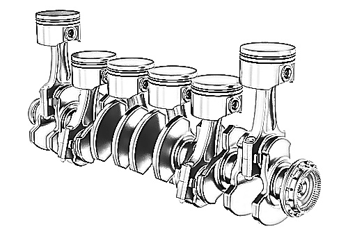 | 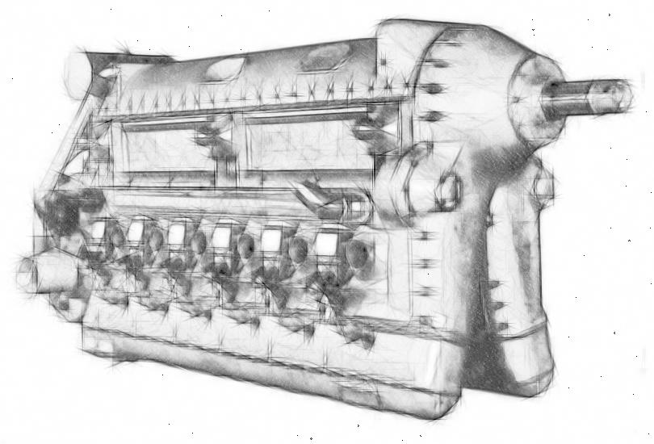 | 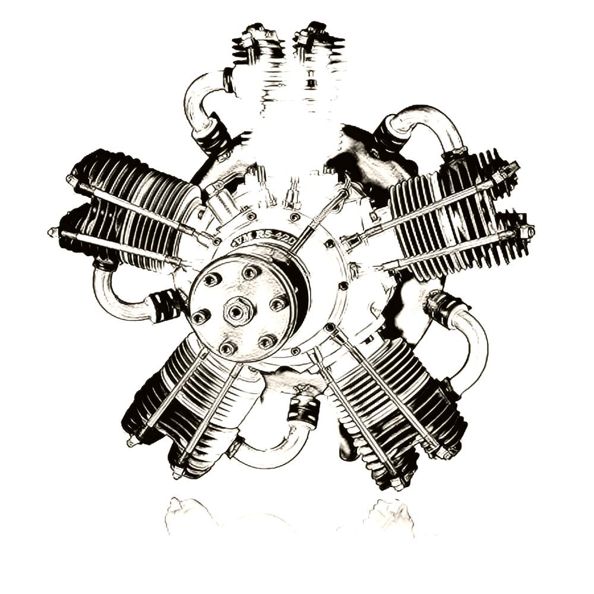 | 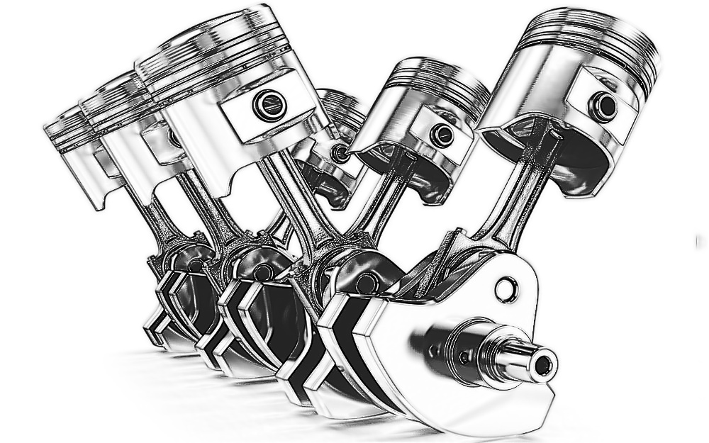 | 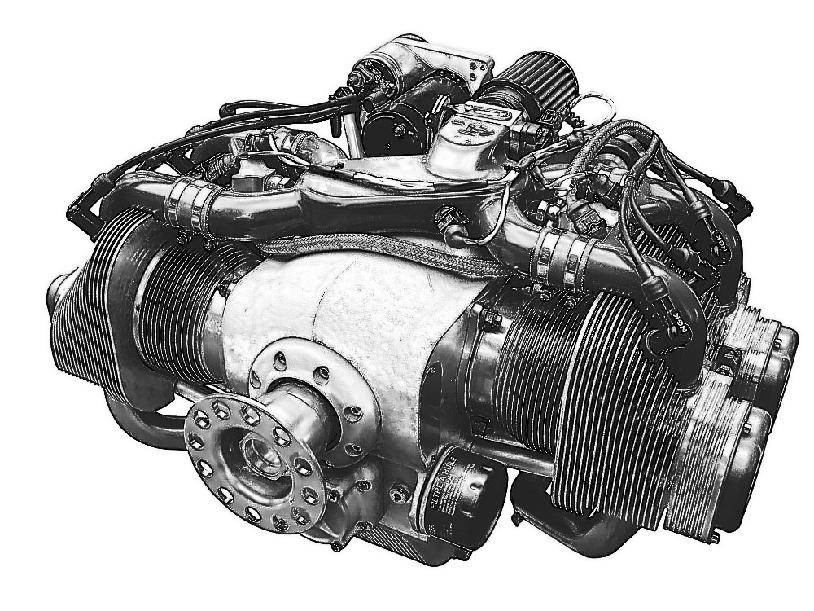 |
| In-line engines | Inverted in-line | Radial | V-shaped | Opposed in-line |
Not in use Too long, which involves too much weight Limits visibility | Not in use Too long, which involves too much weight Better visibility than previous type Risk of hydrolock* | Not in use Allows for a lot of cylinders, and, therefore, high power output Good cooling capabilities Risk of hydrolock* on some cylinders Too big, limiting visibility
| Used in some top-class piston aircraft Allows for a good number of pistons, therefore, high power output Requires a liquid cooling system | Commonly used in general aviation Low weight, short crankshaft, good enough visibility |
* Hydrolock describes a condition when the engine cylinder is flooded with oil or any other liquid.
- Since liquids are incompressible, they impede movement of the pistons and, therefore, rotation of the crankshaft.
- Trying to run an engine in this condition will lead to severe damage.
THE OTTO CYCLE
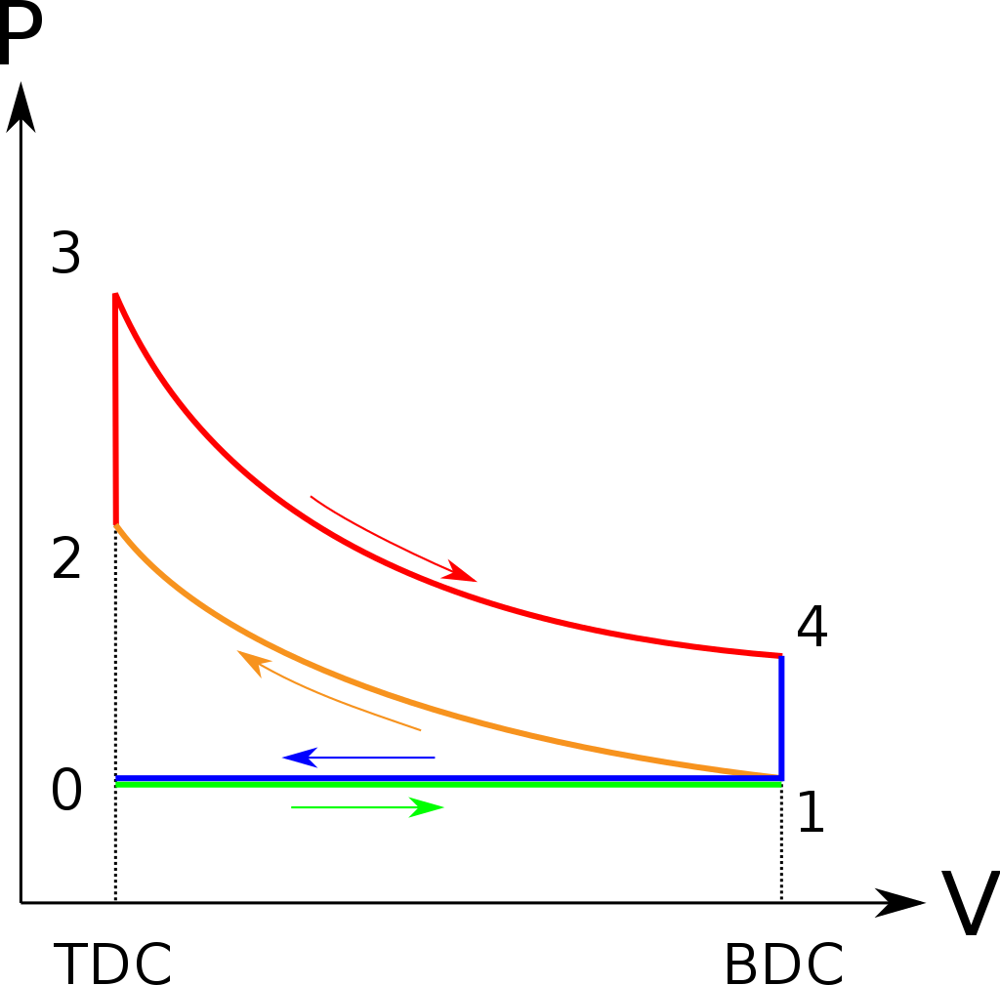
· Piston engines follow the Otto Cycle, also known as the "Four Stroke Cycle", or "Constant Volume Combustion".
| Stroke | Description | Valve position | Thermodynamics |
| Induction (0-1) | Air and fuel are sucked into the cylinder Piston moves from TDC to BDC | Inlet valve opened Outlet valve closed | Volume increases Pressure remains constant |
| Compression (1-2) | Mixture is compressed Piston moves from BDC to TDC | All valves closed | Volume decreases Pressure increases |
| Power (2-4) | A spark is produced, and mixture is ignited Piston is forced from TDC to BDC This is the only stroke that produces mechanical energy | All valves closed | First, increases, due to spark, while piston is at TDC (constant volume) Then, volume increases and pressure is relieved |
| Exhaust (4-0) | Burnt gases are pushed out of the cylinder Piston moves from BDC to TDC This is the cleaning phase of the cylinder | Inlet valve closed Outlet valve opened | Volume decreases Pressure remains constant |
· One complete cycle involves
- Two rotations of the crankshaft (720º)
- One rotation of the camshaft
ENGINE COMPONENTS
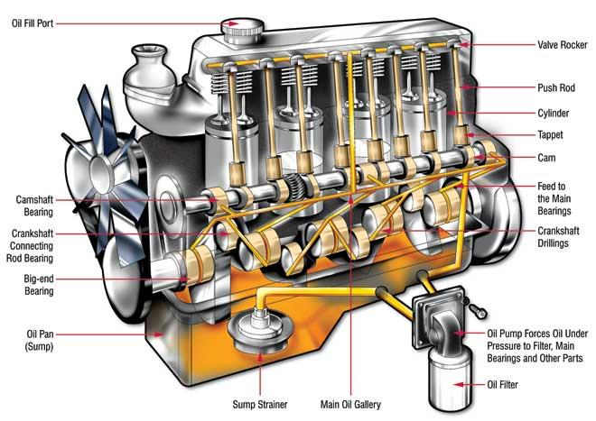
| Component | Description | Made of (If applicable) |
| Crankcase | Housing for the crankshaft. Supports the entire crank mechanism including pistons, cylinders and connecting rods | Aluminum alloy |
| Crankshaft | Converts linear motion into rotary motion Made hollow to reduce weight Has internal passages for carrying self-lubricating oil | Steel |
| Connecting rods | They connect pistons and crankshaft. The small end has a ring called "gudgeon", "piston pin" or "wrist pin" | Steel |
| Piston | Subdivided into piston crown, piston skirt, compression rings and oil control rings | Aluminum alloy |
| Piston pin | Provides a smooth joint between the engine's connecting rod and the piston | Steel |
| Piston rings | A ring on a piston sealing the gap between the piston and the cylinder wall | |
| Cylinder | Part in which the intake of fuel, compression of fuel and burning of fuel take place | Aluminum head and steel barriers |
| Cylinder head | That part of the cylinder carrying valves, guides, springs and spark plugs | Aluminum alloy |
| Valves | Mechanical components used in internal combustion engines to control flow of fuel / air into the cylinder | Steel |
| Valve springs | A helical spring used to hold closed a valve in the cylinder head of an internal-combustion engine | |
| Push rod | A metal rod transmitting the reciprocating motion that operates the valves of an internal-combustion engine having the camshaft in the crankcase | |
| Camshaft | Synchronizes crankshaft with inlet and outer valves
| Steel |
| Rocker arm | The part responsible for transmitting the movement of the camshaft towards the intake and exhaust valves of the engine | |
| Bearings | Devices supporting a mechanical element and allowing for its movement with minimum power loss. In internal combustion engines, they support crankshaft and connecting rods. |
· Note: Crankshaft, connecting rods and pistons are known as "Crank assembly"
· Cylinder terminology
| 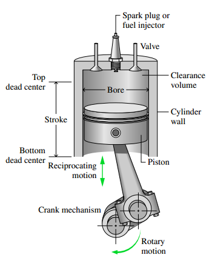 |
· Firing order
- It's the sequence at which cylinders burn (1,2,3,4 // 1,3,4,2 // ...)
- Decided by manufacturer
2. Power
FACTORS AFFECTING POWER OUTPUT
· Air density
- High density allows for a better combustion, since more molecules of O2 are inside the cylinder.
- As a consequence, power is increased at low altitudes and cold days
· Mixture ratio
- An incorrect mixture setting can cause under performance
- Mixture ratio has to be corrected manually, since air density is lower at higher altitudes
· Exhaust Back Pressure
- Lower atmospheric pressure at the outside generates more suction during the exhaust phase of the Otto cycle
- This allows for better cleaning of the cylinder, increasing overall efficiency
· Manifold Absolute Pressure
- This is the pressure of the air in the intake duct
- A high pressure gradient between the throttle valve and intake valve helps fuel easily flow towards the cylinder
EXPRESSIONS OF ENGINE HORSE POWER
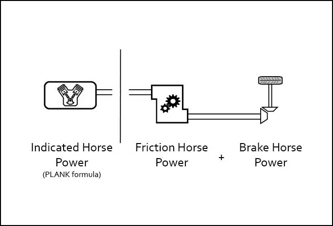
· Indicated Horse Power (IHP)
- The power created by the explosions of gases inside all the cylinders of the engine
- It is the engine’s potential maximum output power.
- Can be calculated through the PLANK formula, as follows:
- IHP = P L A N K / 33000
- P = Mean pressure during the full cycle
- L A K = Total stroke volume of all the cylinders (length of stroke in cm x cylinder crown area x number of cylinders)
- N = Number of power strokes (1/2 RPM)
- IHP = P L A N K / 33000
· Brake Horse Power (BHP)
- This is the power available at the crankshaft, for doing useful work
- Lower than IHP due to friction losses
- Measured with a dynamometer trying to brake the crankshaft, thus called "brake" horse power.
- Generally about 80-85% of IHP.
· Friction Horse Power (FHP)
- This is the difference between IHP and BHP
- Accounts for all losses due to friction within the engine, and fuel consumed by engine itself (fuel and oil pumps, camshaft, crankshaft, etc)
· Shaft Horse Power (SHP)
- This is the amount of power that reaches the propeller's shaft
- May be different to BHP if there are intermediating mechanisms between engine's crankshaft and engine's propeller (e.g, a reduction gearbox, which would consume power)
3. Efficiency
EXPRESSIONS OF ENGINE EFFICIENCY
| Description | Typical values | |
| Thermal Efficiency | · Percentage of energy taken from the fuel which is actually converted to mechanical work · Improved by high compression ratios | 30-35% |
| Mechanical Efficiency | · Relationship between Brake Horse Power and Indicated Horse Power · Mechanical Efficiency = BHP / IHP | 80-85% |
| Volumetric Efficiency | · The efficiency with which the engine can move the charge of fuel and air into and out of the cylinders · Volume of intaken mixture / Swept volume | Around 85% |
FACTORS AFFECTING ENGINE EFFICIENCY
· Valve timing
- Valves do not open and close exactly when piston is at TDC/BDC. Instead, timing is slightly changed to improve efficiency.
- Inlet valve
- Lead: opens 20º before TDC on exhaust. Helps clean the cylinder.
- Lag. Closes after BDC on compression. Keeps momentum of fuel coming in to increase mass and pressure.
- Outlet valve
- Lead: opens 40º before BDC on power stroke
- Lag: closes 30º after TDC on intake stroke to allow incoming fuel to push out exhaust gases.
- Ignition is advanced by 30º before TDC, because mixture takes time to ignite.
- Valve overlap: From 20º before TDC on exhaust to 30º after TDC on intake, both valves are open.
· Ineffective crank angle: around TDC/BDC, a considerable amount of movement from the crankshaft means almost no linear movement from the piston.
4. Engine Controls
· Primary engine controls
- Throttle control operates the throttle valve in the induction system.
- RPM control (blue) adjusts the RPM in constant-speed (or variable pitch) propellers
- Mixture control (red) adjusts fuel / air mass ratio and to stops the engine by impeding fuel flow.
· Secondary engine controls
- Carburetor Hot Air, to avoid icing of the carburetor
- Cowl Flap Control regulates the amount of cooling air passing over the cylinders
- Ignition switch. Different positions (Off, L, R, Both, Start)
- Electric Priming Pump, used to prime the engine prior to starting it
5. Aviation Fuel
DEFINITIONS
· Octane rating
- It's the opposition to uncontrolled detonation of a certain type of fuel.
- It can be increased by using:
- Tetra ethyl lead (used in the past, due to its toxicity)
- Aromatic hydrocarbons, ethanol, methanol
· Temperature definitions
- Freezing points: Temperature at which fuel starts turning into solid.
- Flash point: Lowest temperature at which fuel vapours ignite if given a source.
- Ignition (or auto-ignition) point: Lowest temperature at which fuel vapours will spontaneously ignite even without being given a source.
CLASSIFICATION OF AVIATION FUELS
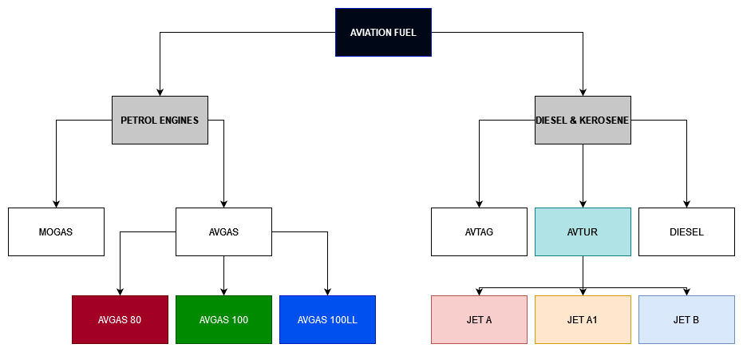
PETROL ENGINES FUEL
· MOGAS (Motor Gasoline)
- Not recommended (and generally not used) in aviation
- Higher water content than AVGAS, increasing risk of carburetor icing
- Can also have components that could lead to fuel system damage (e.g, ethanol)
· AVGAS (Aviation Gasoline)
- Widely used in general aviation
- Classified by octane number
- Octane number is the resistance to detonation
- Red: 80/87 octanes
- Green: 100 octanes
- Blue: 100LL (low-lead)
- Engines need a specific octane number according to their compression ratio.
- Using a lower-than-required octane rating can lead to detonation
DIESEL AND TURBINE ENGINES FUEL
· AVTAG (Aviation Turbine and Gasoline)
- Military jet fuel, not used since the 60s
· Diesel
- Not used due to its high freezing point
- Diesel is viscous and it has a high potential risk of solidifying at low temperatures
- Heavier, safer and more efficient than AVGAS
- Has cetane rating instead of octane rating
- Cetane rating is an indicator of the combustion speed of diesel fuel and compression needed for ignition
- The higher the number, the better the fuel burns
· AVTUR (Aviation Turbine)
- Jet A
- Jet A-1
- Jet B - Used in very cold countries due to its low freezing point
| Fuel | Freezing point | Flash point | Autoignition temperature |
| Jet A | -40ºC | 38ºC | 210ºC |
| Jet A-1 | -47ºC | 38ºC | 210ºC |
| Jet B | -60ºC | -18ºC |
FUEL ADDITIVES
· Fuel may be supplied with several additives, each for a given purpose:
- Antioxidants. Prevent gumming.
- Corrosion inhibitors
- Fungicides. They remediate microbial growth.
- Icing inhibitors
- Anti-detonation (such as tetraethyl lead)
- Static electricity dissipators, to prevent sparking.
OPERATION
· Contamination check
- AVGAS. Water falls to bottom. Easy to detect with draining points.
- AVTUR. Contamination has to be checked with chemical detectors.
DETONATION AND PRE-IGNITION
· Detonation
- A spontaneous combustion inside the cylinder AFTER the spark plug fires
- Causes:
- Likely with high Cylinder Head Temperatures
- Lean air / fuel mixture, leading to overheating
- Over-advanced ignition timing
- Too much compression
- Engine overheating
- Low octane fuel
- Consequences
- Serious internal damage
- Melted spark plug electrodes
- Cracked pistons and piston rings
- Blown cylinder head gaskets
· Pre-ignition
- A spontaneous combustion inside the cylinder BEFORE the spark plug fires
- When this happens, the engine is working against itself
- Causes:
- Hot or melted spark plugs
- Hot exhaust valves
- Burning of carbon deposits inside the cylinder
- A too high compression ratio
- Consequences
- Fatal damage to the engine
- Likely to cause even worse damage than detonation
· Conditions that may lead to detonation or auto-ignition
- High power settings combined with lean air/fuel mixtures
- High power settings and low RPM
· Actions in the event of detonation or auto-ignition
- Reduce power setting
- Increase mixture setting
- Increase airspeed to favour cooling of the engine
6. Carburetors
INTRODUCTION
· Carburetors are used to supply the correct amount of fuel to the cylinder.
- They use a Venturi (choke tube) to decrease static pressure of the air, creating a suction to bring fuel.
- The throttle valve controls the weight of fuel/air mixture entering the aircraft.
TYPES AND COMPONENTS OF THE CARBURETOR
· Float Chamber Carburetor (simple)
| 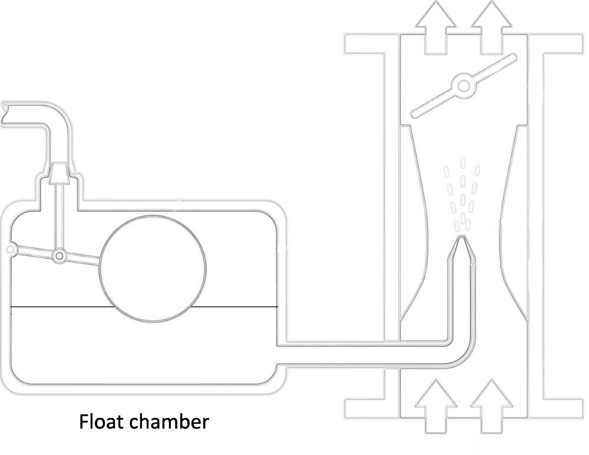 |
· Air Pressure Balance
- Connects the intake and the float chamber
- Ensures that pressure remains the same at both places
- Otherwise, build up of pressure due to ram effect at high airspeeds could impede fuel flow from the float chamber to the Venturi.
· Slow Running System (Idling jet)
- When the throttle valve is closed, there's no suction in the Venturi to draw fuel.
- There's a little "bypass" conduct to provide the engine with enough fuel to keep it running at idle, no matter what the throttle setting is.
· Diffuser
- Used to prevent the mixture from enriching with increasing RPM
- Uses a perforated tube to increase the resistance of fuel going through it.
· Accelerator Pump
- When the throttle is opened quickly, fuel lags behind air due to its viscosity. There's risk of temporary running a very lean mixture, which could even stop the engine.
- A small mechanical pump is fitted in the carburetor, so, when throttle is abruptly opened, it pushes a bit of fuel into the inlet manifold.
· Automatic Power Enrichment (Economiser Systems)
- Power enricher increases the amount of fuel in the mixture during high throttle setting
- It prevents detonation
- Active when throttle valve > 85%
· Variable Orifice Mixture Control
- Blocks partially or completely the mixture of fuel, by using a physical obstacle, according to pilot input.
MISCELLANEOUS
· Carburetor Heat
- Preheats the air before it enters the carburetor
- It prevents formation of ice or melts any existing ice
- It uses air within the engine compartment, which is warmer than outside air due to combustion.
- If engine is already stopped due to carburetor icing, carburetor heat will not work anymore
- When using carburetor heat, air coming to the engine is not filtered
- Avoid using carburetor heat on the ground, unless momentarily for testing
· Primer
- Primer injects fuel into the cylinder
- Priming may be required to compensate for fuel/air being condensed on the cylinder walls if the engine is cold
- Use caution when priming, since it could leak to carburetor fire
RISKS ASSOCIATED WITH THE USAGE OF CARBURETORS
· Carburetor icing
| 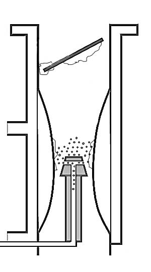 |
· Vapour lock
- Happens when liquid fuel turns to vapor before it gets to the carburetor
- If vapour pressure becomes greater than fuel pressure, fuel gases may impede the flow of fuel into the cylinder.
- This is known as vapour lock, and can lead to engine stop.
· Carburetor fire
- Is a consequence of overpriming the engine before startup.
- In case of carburetor fire, first action is to try suck the flame into the cylinder by:
- Increasing RPM
- Leaning the mixture
- Cranking the engine
7. Fuel Injection
INTRODUCTION
· What is a fuel injection system?
- A fuel injection system differs from a carburetor-type injection in the fact that fuel is metered directly into the induction manifold or the cylinder of a piston engine, without the need of a carburetor.
- Generally, a low pressure, continuous flow of fuel is provided
- Generally, indirect fuel injection is used (which means injecting fuel into the induction manifold, but not directly to the cylinder)
· Advantages of fuel injection
- No Venturi, therefore, no carburetor icing
- More accurate and uniform delivery of fuel into each cylinder
- Virtually no risk of fire
- Fewer maintenance problems
- Increased efficiency
· Disadvantages of fuel injection
- More risk of vapour lock in the fuel lines if engine is already hot
- If fuel lines are very fine, more risk of contamination
COMPONENTS
· Fuel pump. Usually 2 types for each aircraft, one of them acting as a backup
- Engine driven pump
- Constant volume
- Flow depends on RPM
- Pump provides excessive fuel
- Vapour is ejected before entering the pump in a vapour separator chamber
- Electric pump
- Engine priming
- Reduces the risk of vapour suspension at high OATs since it pre-pressurizes the fuel
- Backup
· Fuel Control Unit (FCU)
- It controls the amount of fuel to be sent towards the engine
- Excess fuel is returned to FCU inlet
- Inputs: Throttle position, mixture lever, engine RPM,
· Injector
- Distributes a continuous atomized spray which vaporizes easily
8. Fuel Delivery Systems
INTRODUCTION
· Transfer of fuel from the fuel tanks to the engines can be achieved in several ways, depending on the complexity of the aircraft.
- High-wing general-aviation aircraft generally used a gravity feed system
- Low-wing, single engine general-aviation aircraft generally need a pump to get fuel into the engine
- Low-wing multi engine general-aviation aircraft generally have separate pumps, allowing either wing tank to fuel either engine.
· Fuel tank ventilation
- Fuel tanks are vented to prevent tank deformation and fuel starvation
- Atmospheric air, with water vapour content, enters the tank. During night, condensation occurs, leading to the appearance of water in the fuel tanks.
- Drain holes fitted to allow for inspections
- Inspection should be done at least before the first flight of each day, or after refueling
- Filling the tank at the end of the day leaves less room for air, thus, giving less chance of condensation
GENERAL FUEL-FEEDING SYSTEMS
· Gravity feed
- Fitted in high-wing aircraft
- Typical selector valve positions: L, R, Both
- They don't require an electric pump. In case of engine pump failure, gravity should push the fuel down to the engine.
· Pressure feed (low wing, single engine)
- Selector valve positions: L, R, OFF
- Electric pump required
· Pressure feed (low wing, multi engine)
- Typical positions: ON, OFF, X-FEED (feed from the opposite tank)
- Also requires an electric pump for each engine.
9. Diesel Fuel Injection
THE DIESEL CYCLE
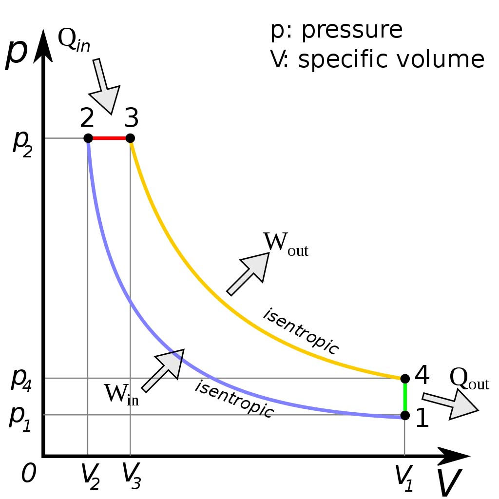
· Contrary to the Otto Cycle, Diesel cycle's combustion happens at constant pressure (2-3).
| Induction Stroke | Only air is drawn into cylinder. This improves volumetric efficiency. |
| Compression Stroke | Air is compressed. There's no fuel in the cylinder yet. Because pre-ignition can't happen without fuel, a higher compression ratio can be used. This improves thermal efficiency. |
| Power Stroke | Fuel is injected. As it makes contact with high-temperature air, it automatically ignites, creating a pressure force that pushes the piston downwards. Force exerted is greater than that of petrol engines. |
| Exhaust Stroke | Similar to petrol engines. |
DIESEL - ADVANTAGES AND DISADVANTAGES
· Advantages of diesel engines
- Allows for higher compression ratios (thus, higher efficiency)
- Cheaper to operate than AVGAS equivalent
- Reduced consumption
- Reduced fire hazard
- No risk of detonation
- No risk of carburetor icing
· Disadvantages
- Increased dimensions due to higher compression ratios
- Higher manufacturing and maintenance costs
- Harder to ventilate - they usually require a liquid cooling system
- Increased complexity and pollution
DIESEL ENGINES DESIGN
· Engine characteristics
- Power is controlled by fuel flow.
- Diesel engines don't have mixture control knobs in cockpit.
- No spark plugs, and, therefore, no magneto system required. Instead, injectors are used.
- Engines can generally run with Diesel, Jet A and Jet-A1
- If the engine is too cold, diesel may not auto-ignite when entering the cylinder.
- Glow plugs are fitted to heat up the engine before startup.
· Two injection system designs
- Direct injection. From a pump, it's directly injected into each cylinder
- Common rail injection. Fuel flows from a pump to a common rail, from which it's distributed to each injector.
10. Lubrication System
INTRODUCTION
· Lubrication can be achieved by oil splashing, pressurized oil or a combination.
· Functions of oil
- Lubrication. Oil reduces friction - and wear - between the moving parts of the engine.
- Cooling. Heat is absorbed (and removed from engine) by the oil.
- Cleaning. Oil carries dirt away from engine core.
- Sealing. Oil fills the space between piston crown and cylinder walls, increasing efficiency and power.
- Protects against corrosion.
- Oil can also be used as a hydraulic system (e.g, for feathering the propeller)
- Allows for better monitoring of the engine (e.g. oil temperature and pressure gauges)
· Viscosity
- It's a measure of a fluid's resistance to flow
- Inversely proportional to temperature
- Low temperature involves high viscosity, thus, high resistance to flow
- High temperature involves low viscosity, thus, tendency to easily flow
LUBRICATION SYSTEM DESIGNS
· Wet Sump System
- Oil is stored hot in a sump right below the engine.
- Used in light, non-aerobatic aircraft.
- Cheep, no need for a pump.
- Disadvantages:
- Lubrication difficulties during some manoeuvres
- Oil temperature is difficult to control
- Oil supply is limited by sump capacity.
- Flow of oil: sump -> pressure pump -> pressure filter -> cooler -> engine -> sump
· Dry Sump System
- Oil is stored cold, in an external tank.
- More complex, but more efficient.
- Extra components involved, such as an oil tank, oil filters, a scavenge pump and a pressure pump
- A "hot well" used to heat up the oil after engine start up.
- A small portion of oil is reserved for feathering the propeller if the engine fails.
- Filters are also used to prevent damaging the pumps and bearings. Usually 3 filters (suction filter, pressure filter, scavenge filter)
- Oil cooler maintains correct oil temperature. It has a thermostatic relief valve to prevent over-pressure when oil is already cold.
SYSTEM COMPONENTS
· Pump types
- Spur gear pump (2 gears interconnected)
- Vane pump (1 rotating gear)
· System monitoring
- Temperature indication. Note that viscosity decreases with increasing temperature.
- Pressure indication. Low pressure can warn you of a leakage
CLASSIFICATION AND DISTRIBUTION OF OIL
· Types of oil
- Straight mineral oil: only used for new engines
- Detergent oil: not used because it can clog filters
- Ashless dispersant oil: used in GA aircraft, holds dirt in suspension.
- Semi Synthetic and Synthetic oil. Mostly used for large aircraft. Best option.
· Oil grade
- Oil grades are determined according to viscosity
- Multi-graded oils can maintain their viscosity in a different range of temperatures.
- The desired characteristics of oil are:
- Correct viscosity
- High flash point
- Low tendency to form carbon deposits
RECURRENT OIL SYSTEM CHECKS
· Oil system checks can be achieved via:
- Magnetic plug. If there's metal contamination, it will stick to the plug.
- Spectrometic. A sample is sent to a lab, where it's examined.
ABNORMALITIES
· Hydrolocking
- An engine is said to be hydrolocked when the cylinder is filled with so much oil that it impedes movement of the piston.
- It happens to radial and inverted engines when stopped for a long time, since oil comes into the cylinder.
- Running an hydrolocked engine will very likely damage the engine.
· Coring
- When climbing in very cold weather, the viscosity of the oil so high that it will be pretty much stationary in the oil cooler.
- Circulating oil can't be cooled down because the oil cooler is blocked.
- This is solved by closing the oil cooling flaps, in order to melt down the oil that is in the cooler, so that it can move.
· No oil pressure.
- Normal on startup.
- Warning should disappear shortly after startup. Otherwise, shut engine down.
· Lows oil pressure.
- Can happen due to high oil temperature (high temperature -> low viscosity -> low pressure indication). In this case, it can be solved by cooling it down.
- Can also happen due to a leakage or a valve stuck in the open position. Shut engine down if this happens.
· High oil pressure.
- Normal if starting a cold engine due to high viscosity associated with low oil temperatures.
- It should disappear soon, as the oil warms up.
· Oil pressure checks in flight.
- Fluctuations in pressure could be the consequence of running low oil levels.
· Oil quantity check after flight.
- In a dry sump system, it can be done immediately.
- In a wet sump system, wait 15-20 minutes for the oil to fall down.
11. Engine Cooling System
IMPORTANCE OF ENGINE TEMPERATURE
· Risks associated with too high engine temperatures are:
- High temperature of oil
- Pre-ignition and detonation
- Structural failure
· Risks associated with overcooling:
- Increased friction
- Worse vaporization of the fuel
ENGINE COOLING
· Types of cooling systems
- Liquid Cooling System
- Uses a mixture of water (70%) and glycol (30%), which circulates through passages around the cylinders
- The liquid is then cooled through a radiator, using the airstream of the propeller
- Requires a reservoir, called "Header Tank"
- Requires an electrically driven pump, which permits liquid movement.
- Advantages: equalized cooling of all cylinders; uses a 2nd heat exchanger for cabin heating; consistent regulation of engine temperature.
- Disadvantages: Heavier. More complex than air cooling (needing more maintenance); Leaks can lead to overheating.
- Air cooling system
- Uses air from the propeller slipstream and aircraft's speed
- Cowl flaps can be used to control the amount of cooling air.
- Efficiency is affected by temperature, speed, AoA, cowl flaps and engine materials.
- Advantages: light weight, no leaks, simple and reliable. Cheap overall.
- Disadvantages: less efficient, risk of overcooling during descent.
· Cylinder Head Temperature
- Measured by a thermocouple fitted to each cylinder
- Sometimes, a single reading is used for all cyclinders. In these cases, the thermocouple is fitted to the cylinder which the manufacturer considers to be the hottest in the engine (for EASA, this is cylinder number 3)
OPERATIONAL RECOMMENDATIONS
· On the ground
- Lack of airspeed means that there's not much air cooling the engine.
- High power settings should be avoided.
- CHT and oil temperature should be monitored.
· On take-off
- Cowl flaps must be open to increase cooling, if fitted.
· Climb
- Overheating can occur
- Ideally climb at the best rate of climb speed (Vy)
- Lower speeds (such as Vx) will reduce the cooling action of the air, and, usually, are only recommended for a limited amount of time.
· Descent
- Risk of overcooling
- Sudden change in temperature can cause Thermal Shock.
- Cowl flaps should be closed, if fitted.
- Engine warmups recommended.
· Shutdown
- Before shutting down, it is recommended to let the engine cool down. Otherwise, possible damage can occur.
12. The Ignition System
INTRODUCTION
· Electromagnetic induction
- A changing magnetic field will always induce a current flow through a conductor
- The magnitude of the induced electromotive force depends on the change in the magnetic flux and also on the time in which the magnetic flux changes. Abrupt and large changes produce more EMF.
- The ignition system of an aircraft has to create a big change in a magnetic field, in order to generate a big current able to produce a spark.
· Ignition system requirements
- Ignition must be provided at the correct time. If too early, piston and cylinder can be damaged. If too late, engine will be losing power.
- The spark needs to have the correct strength and duration to light up the mixture.
- The spark must be generated by an independent electric system (generating at least 12.000V) driven by the engine gearbox.
SYSTEM DESIGN
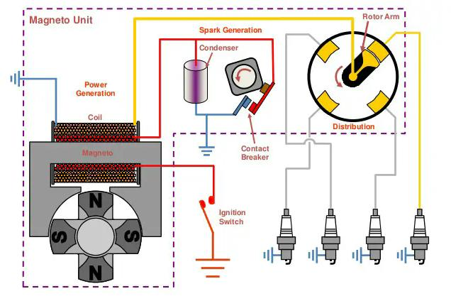
Image source: slideshare.net
· Components
- Magnetos (2 per engine)
- Ignition leads (same as cylinders per magneto; typically 4)
- Spark plugs (1 per ignition lead)
· Magnetos
- Electrical generators that produce an Extra High Voltage
- Components:
- A permanent magnet is mechanically linked to the engine.
- A primary coil
- A secondary coil
- A contact breaker (also known as interrupter)
- A capacitor
- Principle:
- As the permanent magnet rotates, a small Alternating Current is generated.
- This Alternate Current is not powerful enough to create a spark. Therefore, it needs a bit of "processing" before reaching the spark plugs.
- The Alternate Current induces a new electromagnetic field around the stator
- When the contact breaker (interrupter) is suddenly opened, current collapses, collapsing the magnetic field around stator.
- This sudden collapse of the primary circuit generates a very high voltage current in the secondary circuit.
- As the permanent magnet rotates, a small Alternating Current is generated.
| 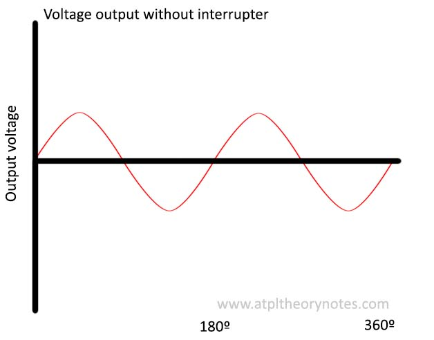 | 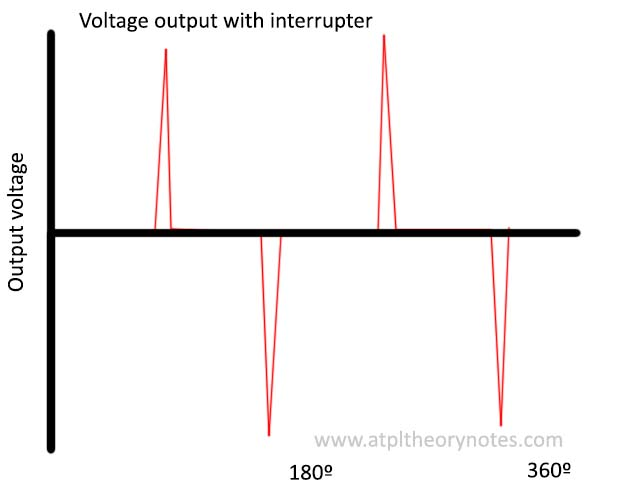 |
· Capacitor
- Prevents arcing across the contact breaker when the circuit is suddenly opened
- Manages the rate of change of the voltage in the primary circuit
· Step-up transformer
- A step-up transformer is used to increase current voltage
- This is done by placing more coils on the output than in the input current
· Distributor
- Distributes the secondary current to the spark plugs
- Rotates at half the speed of the crankshaft
· Spark plugs
- When the potential differential reaches the spark plugs, a small spark is created, igniting the mixture. Two types
- Hot plugs: usually used with low operating temperatures and RPM. Since they retain heat, fouling is not likely.
- Cold plugs. Usually used with high operating temperatures and RPM.
· Ignition switch
- Off: primary circuit permanently closed
- On: primary circuit alternatively opened and closed (normal operation)
- The magneto is made inoperative by grounding the primary circuit.
ABNORMALS
· Grounding wire broken. What happens?
- If wire stays free: magneto stays running and can't be set off
- If wire touches the airframe: system is grounded - magneto is switched off.
· Dead cut check (LOW RPM)
- This checks for dead magnetos
- If engine stops when moving the selector from BOTH to L or R, that magneto is dead.
· Live magneto & spark plugs check (HIGH RPM)
- This checks for fouled or malfunctioning spark plugs.
- At high RPM, when moving selector from BOTH to L or R magneto, a small RPM is to be expected.
- If there's a big drop, spark plugs of the running magneto are failing
- If there's no drop at all, there's a magneto that should be turned off but is still alive. This is a no-go condition and magnetos must be replaced.
ENGINE STARTING
· Engine starter
- Electrical motor
- Drives the engine by the gearbox, then disengages itself when engine is running.
· Ignition during start-up
- During engine start, we need to correct ignition:
- Voltage (at low RPMs, electromagnetic induction results in a very weak current, unable to produce a spark)
- Timing (ignition has to be retarded, due to the low engine RPM)
· Booster coils
- This method involves bypassing the magneto all together and sending a high voltage to the spark plug.
- This requires another electrical system to feed the spark plugs.
- Used during engine start-up.
· Ignition coupling
- Consists of a spring-loaded coupling and a flywheel, which delays, and then accelerates the magneto to speeds at which a powerful spark plug is generated.
- Thanks to impulse coupling, both, voltage and timing of the spark plugs are corrected during engine-startup.
SMOKE
· Smoke coming out of the engine can indicate several malfunctions
- Blue smoke indicates oil burn in the cylinders
- A possible cause could be broken piston rings, allowing oil spillage into the cylinder
- Black smoke indicates carbon granules being burnt in the cylinders
- White smoke indicates high water content in the combustion chamber
13. Engine Instruments
Note: More information on Engine Instruments can be found within "Instruments" Subject
· RPM gauge
- Indicates rotation speed of the engine.
- Uses a tachometer, either driven mechanically or electrically.
· MAP - Manifold Absolute Pressure
- Absolute pressure of the air measured between the throttle valve and the cylinder inlet valve.
- Highest MAP occurs when throttle is fully open at sea level (slightly less than ambient pressure due to friction loss)
- In naturally aspirated engines, MAP unavoidably reduces with increasing altitude.
· Oil pressure
- Uses a bourdon tube.
- Oil pressure must be registered within 30 seconds of engine start. Otherwise, shut down immediately.
· Oil temperature
- Oil temperature mainly affects its viscosity
- Low temperature -> high viscosity -> high pressure exerted by oil, and viceversa
· Cylinder Head Temperature
- Measured by a thermocouple fitted to each cylinder
- Sometimes, a single reading is used for all cylinders. In these cases, the thermocouple is fitted to the cylinder which the manufacturer considers to be the hottest in the engine (for EASA, this is cylinder number 3)
· Exhaust Gas Temperature
- Measured by a thermocouple.
- Allows for adjustment of the the fuel/air mixture in-flight.
14. Engine Performance
· Power
- Power = Torque x RPM
- Torque is proportional to MAP
· Effect of altitude
- As air density decreases, there's less available oxygen for combustion.
- As altitude increases, MAP decreases.
- Therefore, altitude decreases power output of naturally aspirated engines.
· Super-charged engines
- If MAP is kept constant by a super-charger, engine improves performance with altitude.
- This is because exhaust back pressure (outside pressure) is less than at sea level, improving efficiency at exhaust stage.
15. Power augmentation
INTRODUCTION
· Naturally aspirated engines
- A naturally aspirated engine uses atmospheric pressure to drive air intake, as opposed to forced induction through a turbo or supercharger
- They are simple and reliable, but lack performance as altitude increases and density of the air decreases.
- To either maintain at high altitude, or increase maximum engine power at sea level, the Manifold Absolute Pressure has to be artificially raised.
- This is generally achieved through super-chargers and turbo-chargers.
POWER AUGMENTATION
· Types of power augmentation depending on their purpose:
- Ground Boosted Supercharger. Increases sea level power on the ground.
- Altitude Boosted Supercharger. Maintains sea level power up to high altitude.
· Turbochargers vs superchargers
- Turbochargers are driven by a turbine rotated by exhaust gases.
- Superchargers are driven by a mechanical shaft connected to the engine's crankshaft.
· Operation
- Compression depends on the diameter of the impeller, speed of rotation and shape
- The diffuser decreases speed and further increases air pressure
- Sucked air ends up with the same temperature but 3 times more static pressure
· Inter cooler
- Cools the compressed air to get it partially back to normal density.
· Manifold pressure
- It's the pressure of the air between throttle valve and inlet valve
- Boost pressure: indicates pressure relative to sea level
- Manifold Absolute Pressure: indicates the absolute pressure (in Hg)
· Crossover altitude
- Altitude at which the compressor is no longer able to compensate for the pressure reduction
- Climbing above this altitude results in a MAP decrease
· Principle of turbochargers
- Powered by the energy of the engine exhaust gases
- The compressor is connected to the intake system
- The turbine is connected to the exhaust system, and turns the compressor via a mechanical shaft
· Waste gate
- It's a valve that controls the amount of exhaust gases that go to the turbine.
- If no power augmentation is required, the valve is closed and the turbine is static
- At the crossover altitude, the valve is fully open since we need to turn the turbine (and the compressor) in order to generate more pressure
- Can be manually controlled (rare) or automatically
- Deck pressure: pressure just after the compressor. Measured by an aneroid capsule that closes or opens the oil circuit. The pressure of the oil controls a spring linked to the waste gate.
- If too much deck pressure is detected, the oil system will unlock and the waste gate will open.
· Overboost Relief Valve.
- Valve that opens automatically if too much deck pressure is detected.
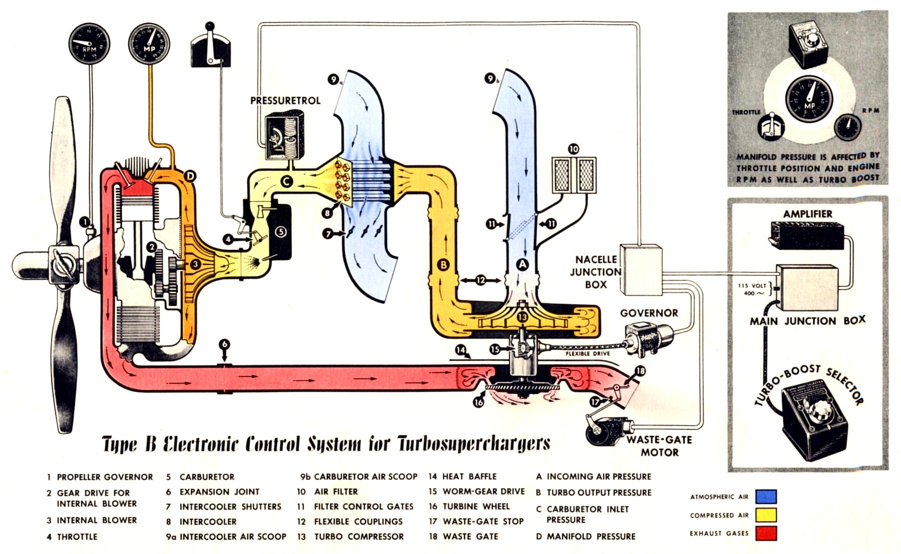
Image source: enginehistory.org
16. Constant Speed Propellers
FIXED PITCH PROPELLERS
· Disadvantages of fixed pitch propellers
- They are designed to be efficient at a given (and generally small) range of airspeeds, depending on manufacturer considerations
- Propellers designed for low speed operation will be very efficient during take-off, but will lack performance during cruise
- At high speeds, propeller angle of attack can reduce to zero and even become negative
- Propellers designed for cruise will be efficient throughout most of the flight, but will lack take-off performance and will need larger take-off runs
- It's possible to even stall the blade under extreme conditions
- Therefore, fixed pitch propellers are only efficient at one combination of TAS and RPM
| 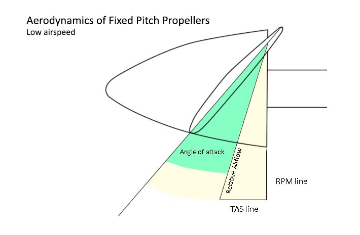 | 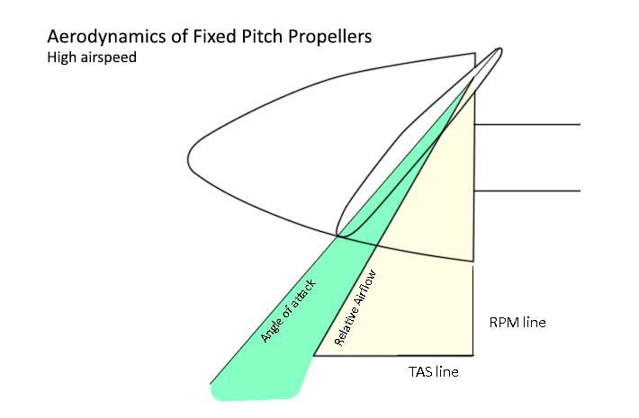 |
VARIABLE PITCH PROPELLERS
· Advantages of constant speed propellers
- They remain efficient over a wide range of airspeeds
- Optimizes engine/propeller combination (fuel consumption and wear)
- Engine can be maintained at its optimum RPM, improving fuel consumption and reliability
- Propeller will maintain a good amount of thrust regardless of RPM
| 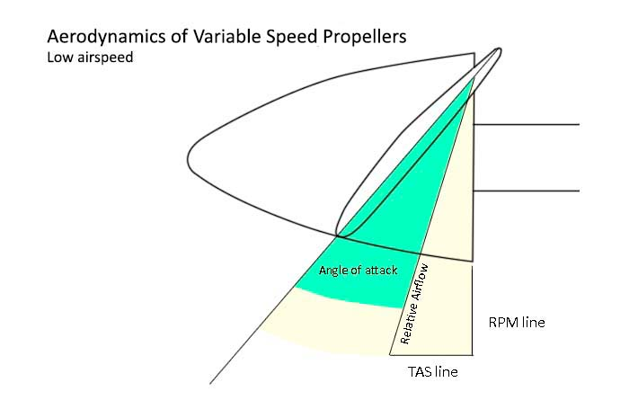 | 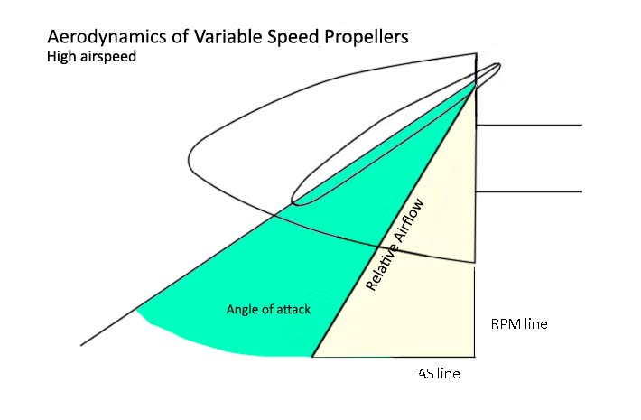 |
VARIABLE PITCH PROPELLER THEORY
· Constant speed unit
- Uses flyweights connected to the crankshaft that reacts to changes in RPM and changes the blade angle to keep RPM constant
- If RPM increases above target
- 1. Flyweights are pushed outwards
- 2. A mechanism that increases blade angle is triggered
- 3. More blade angle involves produces more thrust and more torque
- 4. The additional torque stabilizes RPM at the pilot setting.
- If RPM decreases above target
- 1. Flyweights are pushed inwards
- 2. A mechanism that decreases blade angle is triggered
- 3. Less blade angle produces less thrust and less torque
- 4. The reduction of torque allow RPM to return to the original pilot setting.
· Manifold Absolute Pressure
- Because the propeller RPM is constant, the primary gauge to measure engine power is the MAP gauge
· Propeller actuator designs
- Single acting propeller: Oil on only one side of the actuator, nitrogen on the other
- A centrifugal latch prevents the feathering of the propeller at shut down
- Double acting propeller: Oil on both sides
· Propeller moments
- Aerodynamic Turning Moment (ATM). Tends to increase blade angle as a consequence of thrust generated
- Centrifugal Turning Moment (CTM). Tends to decrease propeller angle as a consequence of blade mass inertia
- CTM exceeds ATM at operating RPM. Balancing weight is added to counteract CTM.
· Blade ranges
- Alpha range: Range between flight idle and maximum power. Mainly used in flight.
- Beta range: Range between flight idle and maximum reverse power. Used on the ground.
· Feathering
- After an engine failure, a propeller will start windmilling and generate a force opposing aircraft movement (drag)
- Some propellers have the ability to feather, which consists on increasing blade angle to almost 90º
- This position stops the propeller from windmilling and reduces propeller drag to the minimum
· Synchronization and synchrophasing (Multi-engine aircraft)
- Synchronizers match engine speeds
- Synchrophasers match engine angular positions
· Handling power changes
- Increasing power: mixture, then RPM, then throttle
- Decreasing power: throttle, RPM